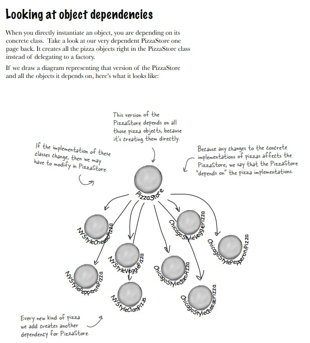
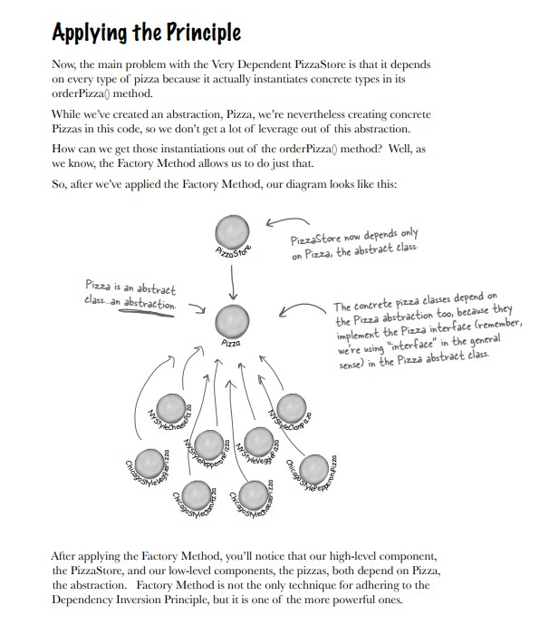

factory pattern, bài toán nhà hàng pizza xuyên quốc gia
một nhà hàng xuyên quốc gia sản xuất pizza
mỗi chiêc bánh pizza ở mỗi nơi có thể được sản xuất khác nhau
có thể khác về nguyên liệu, giá tiền,... nhưng quy trình làm ra một chiếc bánh thì tương tự
để giải quyết bài toán đa dạng trong việc khởi tạo một object Pizza ở các quốc gia
thì cần đóng gói việc khởi tạo này lại và tách chúng khỏi phần ít thay đổi
từ đó sinh ra factory pattern,
bằng việc để việc khởi tạo object Pizza cho một class chuyên biệt và kết tập chúng vào một class
từ đó linh động trong việc thay đổi giữa các loại factory mong muốn
 vs 
Nhận Xét
- với cách cũ thì việc khởi tạo nằm toàn bộ trong một method khiến method này siêu to (if-else explode)
-
class này trở nên siêu nặng, siêu phụ thuộc "TOÀN BỘ" các class Pizza
- điều này khiến việc maintain trở nên nặng, mệt
- chưa áp dụng principle isolate thằng nào vary (cô lập thằng đa dạng)
-
nếu áp dụng pattern trên thì giờ factory chính thì phụ thuộc một class gốc Pizza là abstract
- từ đó áp dụng được tính trừ tượng, đa hình trong OOP
- giờ cái mà đa dạng đã được co lại nằm trong vùng dữ liệu, không phải code logic của chương trình
-
áp dụng pattern giảm sự phụ thuộc (nặng) của class logic
- giờ chiều phụ thuộc thực ra là cái đa dạng sẽ phụ thuộc một gốc duy nhất
- khởi tạo class dữ liệu được phân tải, tách biệt, chuyên biệt cho một class khác